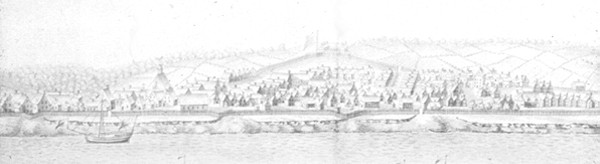

|
-
by
 The image shown above is from a larger panorama of the city as the artist might have remembered it in about 1717. It shows the slope of the hill and the waterfront at low tide! Click on any feature for more information. The colonial city of Albany was situated on the west bank of the Hudson River - on a hillside rising westward and away from the waterfront. The initial settlement - a trading post called Fort Orange, sat on the flood plain near the water's edge, south of the subsequent urban core, was located beyond the left edge of this image. By the 1660s, enterprising fur traders had acquired lots and had built a number of homes along the river to the north of the original trading post. By 1660, a wooden stockade encircled the village first called Beverwyck. At that time, most of the settled area was on the flood plain with some new construction moving up the hillside - but not yet reaching today's Pearl Street to the west. After 1664, the settlement - now called Albany began to expand up the hillside. The fort built by the English in 1676 straddled a ridge above two riverbound streams and was located about halfway up the hill that ran west from the river. For most of the colonial period, the fort was situated above community settlement. My favorite artist's representational diagram dated 1686 and an engineer's map dated at 1698 help illustrate community features. At the same time, a number of streams flowed through the city. These ran west-to-east and downhill and emptied into the Hudson River. They exist today but are buried beneath the streets. From north to south, they are Foxes Creek, the RuttenKill, and the Beaverkill. Each of these streams cut deeply into the west bank hillside - creating ravines whose banks/sides were eroded by runoff water. The high (dry and stable) ground between the ravines was considered prime building property. Albany's main streets ran east to west along these ridges. From north to south, these main streets were Patroon (Clinton),State, Lydius (Madison Avenue), and Morton (today Avenue) Streets. Detail from a print of a panoramic view of Albany produced by English artist William Burgiss depicting Albany during the second decade of the eighteenth century. Print in the collection of the Albany Institute of History and Art. Print of the print in the CAP Graphics Archive. The linked features of the community iconography represent just a few locations because other image maps permit more exact location. first posted: 8/25/03; revised 4/25/09 |